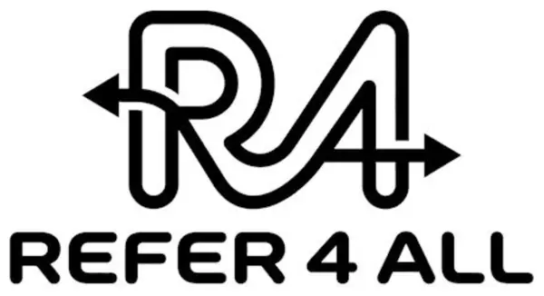

↗
Tavsiye
Girişimci, Brand & Trend ekosistemi içinden seçtiği ürünü kendi çevresine tavsiye eder.

Brand & Trend ↗Verification · Entitlement · Compliance
Refer4All, Brand & Trend ekosisteminin satış doğrulama, girişimci hakediş ve uyum servis katmanıdır.
Satış Refer4All üzerinde tamamlanmaz.
Nasıl çalışır?
Girişimci, Brand & Trend ekosistemi içinden seçtiği ürünü kendi çevresine tavsiye eder.
Marka sitesinde gerçekleşen satış ile tavsiye kaynağı arasındaki ilişki doğrulanır.
Doğrulanmış satıştan doğan girişimci hakedişi kurallara göre hesaplanır ve kayıt altına alınır.
Servis katmanı
Refer4All görünür bir pazaryerinden çok, doğrulanabilir sosyal ticaretin servis altyapısıdır.
Gerçekleşen satışın tavsiye kaynağıyla eşleştirilmesini ve doğrulanmasını destekler.
Doğrulanmış işlem üzerinden girişimci hakedişini tanımlı kurallara göre hesaplar.
Hakediş, kayıt, raporlama ve ilgili uyum süreçlerinin yönetilmesini destekler.
Brand & Trend ekosistemi
Refer4All
Brand & Trend ekosisteminin doğrulama, hakediş ve uyum servis altyapısı.